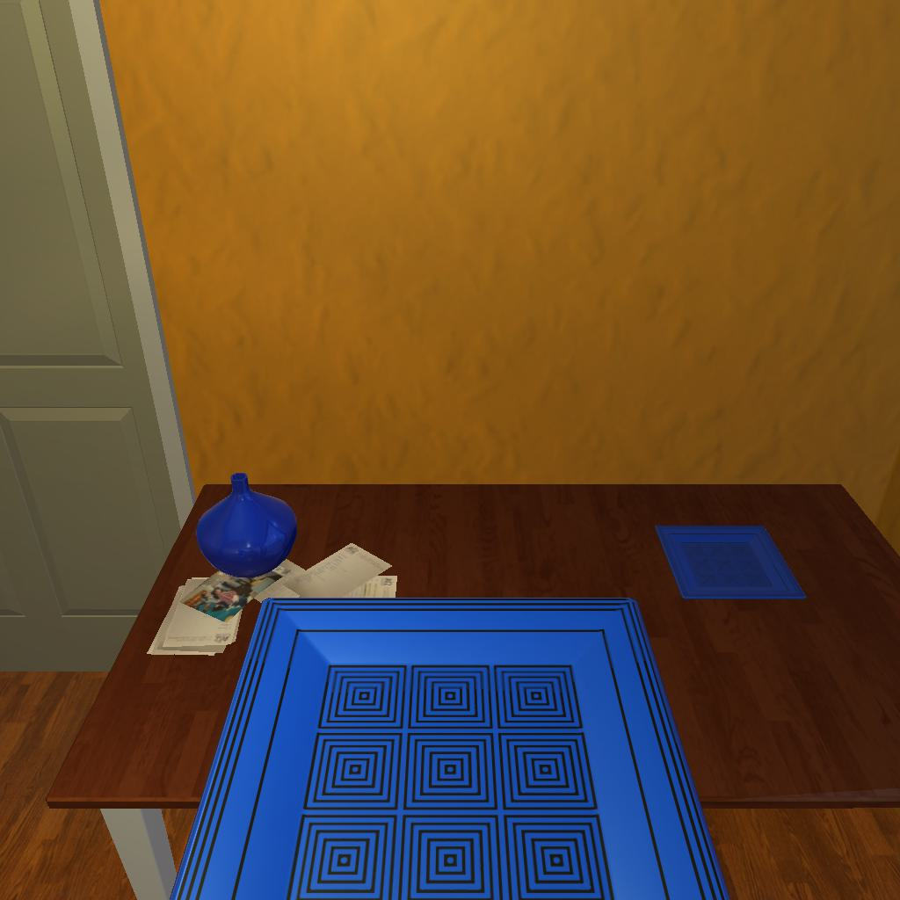

---------------------------------------------------------task: 3---------------------------------------------------------
--------------------------------------------------------------------------------------------------------------------------------------------------------------------
--------------------------------------------------------------------------------------------------------------------------------------------------------------------
Step:--------------------------------------------------------------------------9-------------------------------------------------------------------------------
----------------------------------------
VLM Prompt:
Image1:
Image2:
**Instruction**
1. Analyze the provided images to identify all visible household objects and compare the difference between images (e.h. whether the object is opened or not and taken on hand or not), focusing on those relevant to the task description "examine the plate with the floorlamp."
2. Use the analysis of images and the task hint "The agent must find an object of the desired type, locate and turn on a light source with the desired object in-hand." to answer the question: what is the most reasonable action in the choices for the task description "examine the plate with the floorlamp"?
3. Decide and write the answer using the template: The answer is: (i): , where i is the real number. If there is no desired object in images, search every place based on **Initial Observation** to find the object. And if no one is exactly correct, choose a similar answer.
**Initial Observation**
You are in the middle of a room. Looking quickly around you, you can see armchair (1), garbagecan (1), tvstand (1), shelf (1-5), sofa (1), coffeetable (1), sidetable (1-2), drawer (1)
**Answer Choices**
(1): go to armchair 1
(2): go to garbagecan 1
(3): go to tvstand 1
(4): go to shelf 1
(5): go to shelf 2
(6): go to sofa 1
(7): go to sidetable 1
(8): go to drawer 1
(9): go to shelf 3
(10): go to shelf 4
(11): go to shelf 5
(12): put plate 2 in/on sofa 1
(13): examine plate 2
(14): examine sofa 1
**Answer**
Let's think step by step by following the instructions.
----------------------------------------
----------------------------------------
Original Response:
Image Analysis:
- Image1 shows a table with a blue plate on it, a vase, and some papers. There is also a door and a blue mat on the floor.
- Image2 shows the same blue plate on a table, with a sofa and a framed picture on the wall.
Based on the task description to "examine the plate with the floorlamp," we do not see a floorlamp in either of the images. Therefore, we need to search for the floorlamp in the locations mentioned in the Initial Observation.
Considering the task hint, the agent needs to find the plate (which is visible in both images) and then locate and turn on a light source, presumably the floorlamp, while holding the plate.
The most reasonable action from the choices provided, which aligns with the task description and hint, would be to first find the desired object, which is the plate. The plate is already in hand in both images, so the agent does not need to pick it up. The next step would be to locate a light source, which is likely to be in the vicinity of the furniture items listed.
The answer is: (13): examine plate 2, assuming that the "plate 2" refers to the blue plate seen in the images, and the action involves examining it more closely, possibly near a light source that needs to be found in the room. If "examine plate 2" includes turning on the light source to inspect the plate properly, then this would be the most reasonable action. If not, the agent would need to find the floorlamp first, but since there are no options to locate or turn on the floorlamp, examining the plate is the closest relevant action.
----------------------------------------
----------------------------------------
>>> Refine Original VLM Response and Get Pure Action: examine plate 2, assuming that the "plate 2" refers to the blue plate seen in the images, and the action involves examining it more closely, possibly near a light source that needs to be found in the room
----------------------------------------
-----------------------------------------------------------------
Running time: 62.35753035545349 seconds
Total Money: 0.8971100000000002
-----------------------------------------------------------------
-----------------------------------------------------------------
Text Observation:Nothing happens.
-----------------------------------------------------------------
UNSUCCEED